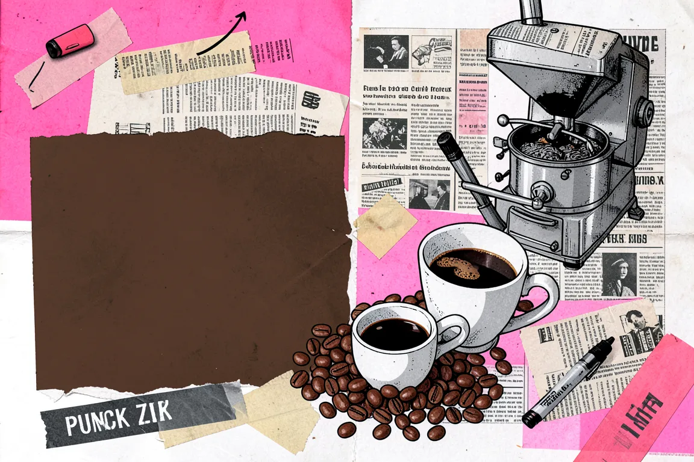

Fotokopiert svart-hvitt, utklipte bokstaver, skrivemaskintekst, tape og håndskrift. Det kom fra punkmiljøene i London og New York og viser at hvem som helst kan lage en side.

Kjerneidé
Hvem som helst kan publisere: lag siden med saks, lim og kopimaskin, og vis skjøtene med vilje.
Designprinsipper
Sett siden i svart på off-white (#F1EEE4) med én accentfarge (fluorescerende rosa #FF2E88 eller gul) på under 10 % av flaten.
Bland 3 til 5 bokstavstiler i en overskrift, hver bokstav klippet som en blokk med en forskyvning på 2px til 4px og en helning på 1° til 6°.
Sett brødtekst i en skrivemaskinskrift på 15px til 16px med ujevn ordavstand; strek under eller over ord for hånd.
Legg tapestrimler (80px til 160px lange, grå ved 20 % dekning) i hjørnene på bilder og bokser.
Fotokopier hvert bilde: gråtoner, kontrast 150 % til 200 % og et synlig korn på 10 % til 20 %.
Roter bokser og bilder med -4° til 4° og la dem overlappe med 8px til 40px.
Legg til håndtegnede merker (piler, X, krussedullar) med tusj og en strekbredde på 3px til 5px.